Orca — 여러 AI 코딩 에이전트를
나란히 굴리는 데스크톱 IDE
Claude Code · Codex · Cursor CLI 같은 에이전트를 격리된 git worktree 위에서 병렬로 실행하고, 그 결과 diff를 진지하게 리뷰한 뒤 바로 커밋·배포까지 하는 도구입니다. 이 런북은 공식 문서(onorca.dev/docs)를 한글로 정리한 학습용 자료입니다.
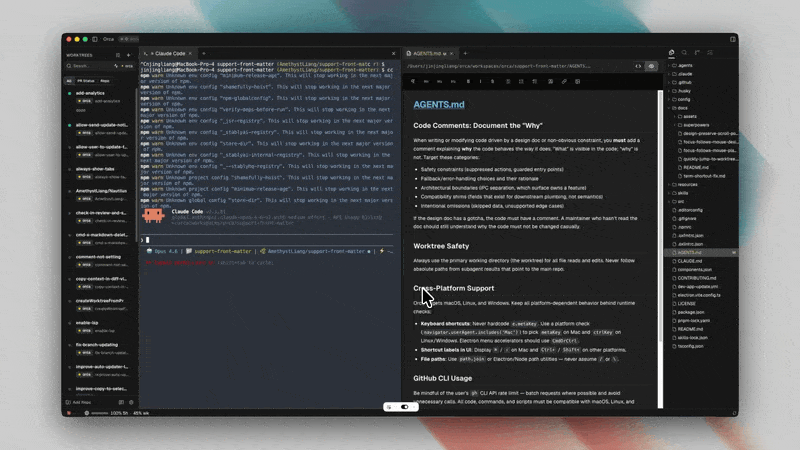
최종 업데이트 2026-07-14 · 원문 onorca.dev/docs · 이미지는 Orca 공식 사이트 자산 · 개인 학습용 번역·요약본입니다.
Orca란 무엇인가
Orca는 이미 쓰고 있는 CLI 에이전트들을 운영하는 IDE입니다. 새로운 AI 모델도, git 대체품도, 클라우드 전용 플랫폼도 아닙니다. 실제 git worktree를 쓰고 로컬에서 돌아가며, 필요할 때만 SSH로 원격 실행을 붙입니다.
- 작업마다 독립된 worktree · 에이전트 터미널 · 브라우저 탭이 격리되어, 브랜치를 갈아끼우는 저글링 없이 병렬 작업이 가능합니다.
- 주요 사용 시나리오: ① 같은 작업을 여러 에이전트에게 동시에 시켜 경쟁시키기, ② 배포 전 AI diff를 라인 단위로 리뷰, ③ 여러 구독(계정)을 오가며 사용량 극대화, ④ SSH로 원격 머신에서 에이전트 실행.
- 노코드 대체재가 아니라, 숙련 개발자의 레버리지를 키우는 도구입니다. diff를 읽고 커밋을 관리하고 worktree를 깔끔히 유지하는 사람을 위한 것.
독자 AI 모델 ✗ · git 대체품 ✗(실제 git worktree 사용) · 클라우드 전용 ✗(로컬 실행이 기본).
먼저 잡고 갈 3가지 핵심 개념
1Worktree
하나의 작업(기능/버그)에 대응하는 격리된 git 작업공간. 디스크에 저장소 사본이 따로 생겨, 병렬 에이전트가 파일 충돌 없이 안전하게 일합니다.
2Agent (session)
하나의 worktree 안, 하나의 터미널에서 도는 하나의 CLI 에이전트. Orca가 실행·유휴·종료 등 생명주기를 모니터링합니다.
3Base ref
새 worktree가 분기해 나오는 기준 브랜치(보통 origin/main). repo마다 지정하며, worktree는 여기서 갈라져 나옵니다.
Orca 앱 어디서든 ⌘K 로 문서 검색을 열 수 있습니다.
설치 & 업데이트
- 배포 방식: 직접 다운로드 · Homebrew · GitHub Releases. macOS/Windows/Linux 데스크톱 앱.
- 업데이트 채널은 검증된 Stable 과 매일 갱신되는 RC(release candidate) 로 나뉩니다. 데이터 손실 없이 다운그레이드도 가능.
- RC 빌드 받기: Settings → General → Updates 에서 Shift 를 누른 채 “Check for Updates” 클릭.
- Windows 기본 셸(PowerShell / CMD)은 Settings → Terminal 에서 지정.
# Homebrew 설치
brew install --cask stablyai/orca/orca
# 업그레이드
brew upgrade --cask orca첫 3-에이전트 세션
Orca의 기본 흐름을 한 번에 체득하는 실습입니다.
- 1. Repo 추가
- 사이드바에서 로컬 저장소를 추가합니다.
- 2. Worktree 생성
- repo 이름 옆 + 버튼으로 worktree를 만듭니다. 같은 작업을 여러 번 만들어 경쟁시킬 수 있습니다.
- 3. 에이전트 선택
- 터미널의 콤보박스에서 실행할 에이전트(Claude Code 등)를 고릅니다.
- 4. 화면 분할
- worktree 탭을 드래그해 수평/수직으로 페인을 나눠 여러 결과를 나란히 봅니다.
- 5. 리뷰 & 배포
- 인라인 주석이 되는 diff 뷰어로 검토 후, Orca에서 바로 커밋·푸시합니다.
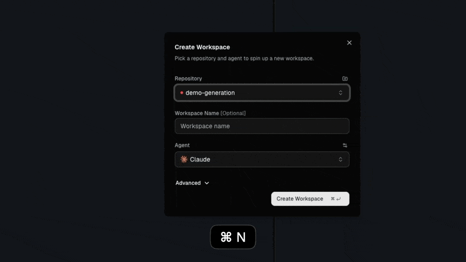
Worktree
Orca는 worktree-native 아키텍처입니다. 각 작업이 실제 git worktree로 디스크에 별도 사본을 가져, 병렬 에이전트가 서로의 파일을 건드리지 않습니다. 모든 worktree는 표준 git 명령과 그대로 호환됩니다.
- 모델: repo는 base ref(보통
origin/main)를 갖고, 각 worktree는 start-from ref에서 분기해 독립된 브랜치·파일·에이전트 터미널을 유지합니다. - 생명주기: Create → Work → Review → Ship → Archive/Delete.
- start-from 유연성: base ref, 로컬 브랜치, 특정 커밋 SHA, 원격 브랜치 어디서든 분기 가능. (Create 다이얼로그의 Advanced 드로어에서 명시적 브랜치명 지정)
- 사이드바는 worktree를 프로젝트별로 묶고 필터링하며, 멀티 repo 프로젝트 그룹과 폴더 워크스페이스를 지원합니다.
| 단축키 / 동작 | 기능 |
|---|---|
| Cmd-J | Worktree Jump Palette (검색/이동) |
| Cmd(Win/Linux Ctrl) + 클릭 | worktree 다중 선택 |
| Shift + 클릭 | 연속 범위 선택 |
| 제목 더블클릭 | 인라인 이름 변경 |
탭 · 페인 · 분할
- Tab
- 터미널·에디터·브라우저·diff·PR 중 하나를 담는 개별 컨테이너.
- Tab Group
- 여러 탭을 묶은 모음.
- Pane
- tab group을 담으며 분할 가능한 컨테이너.
- Split Layout
- 여러 pane을 중첩 배열해 동시에 배치하는 레이아웃.
- Pinned Boundaries
- 창 크기를 바꿔도 위치를 유지하는 지속적 분할선.
- 탭을 페인 오른쪽 가장자리로 드래그 → 좌/우 분할, 아래 가장자리로 드래그 → 상/하 분할.
- 탭은 그룹 내에서 세로 드래그로 순서 변경, 그룹 간 드래그로 이동.
| 단축키 / 메뉴 | 기능 |
|---|---|
| Cmd+Option+W (Win/Linux Ctrl+Alt+W) | 활성 worktree의 에디터 파일 탭 전부 닫기 |
| 터미널 탭 메뉴 → “Split terminal right / down” | 터미널 우측·하단 분할 |
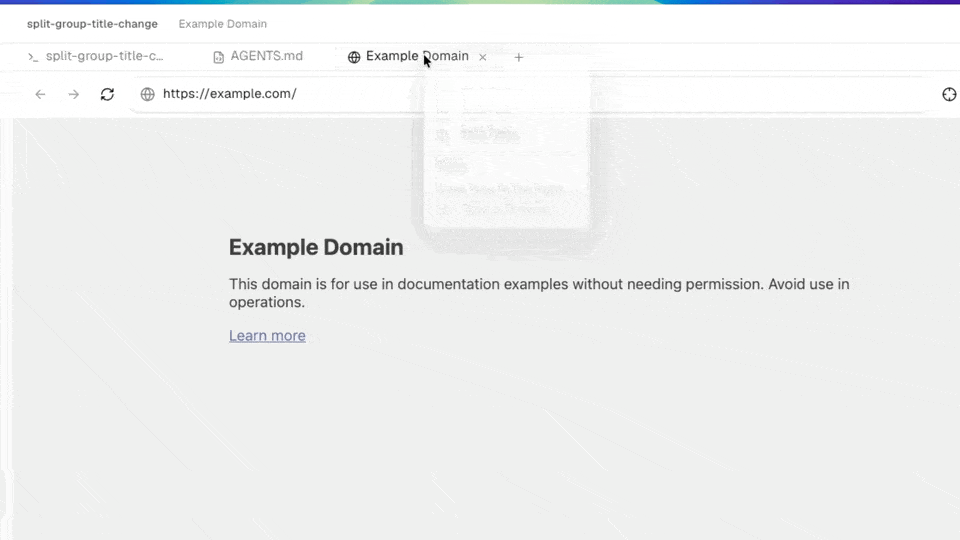
에이전트 & 세션
Agent session = 하나의 worktree · 하나의 터미널에서 도는 하나의 CLI 에이전트. Orca가 상태를 실시간 모니터링합니다.
초록 점멸 = 작업 중 · 노랑 = 사용자 입력 대기 · 회색 = 유휴 · 점 없음 = 일반 셸 터미널.
- Agent Dashboard: worktree 카드가 색상 상태 점과 함께 인라인 에이전트 세션을 보여줘 한눈에 파악됩니다.
- Launch Defaults: 지원 에이전트는 full-autonomy 플래그(예: Claude
--dangerously-skip-permissions)가 미리 적용되어 실행됩니다 — worktree를 샌드박스로 취급하기 때문. - Restart Chip: 에이전트가 종료되면 클릭 한 번으로 동일 에이전트를 작업 디렉토리·계정 상태 유지한 채 재개(rehydrate)합니다.
- 세션 생명주기: Launch → Work → Idle → Exit. launch 인자는 Settings → Agents 에서 커스터마이즈.
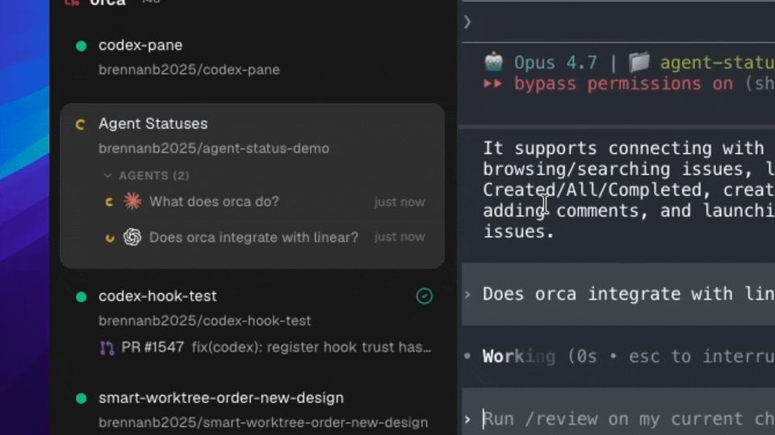
세션 복원
Orca를 닫았다 다시 열면 워크스페이스 상태가 자동 보존됩니다.
✅ 복원되는 것
열린 worktree, 중첩 split·포커스 탭 레이아웃, 백그라운드 데몬이 유지하는 실행 중 에이전트 프로세스, 터미널 scrollback, 직전 포커스 worktree·탭.
⚠️ 복원 안 되는 것
호스트 레벨 장애(재부팅·OS 업데이트·커널 패닉·강제 종료)는 실행 중 에이전트를 종료시킵니다. 단 레이아웃·scrollback은 다음 실행 때 복원됩니다.
- Cmd-Q 로 일반 종료해도 에이전트는 백그라운드에서 계속 실행됩니다.
- 호스트 재시작 후엔 아무 탭에서든 에이전트를 다시 실행해 작업을 이어갑니다. 깔끔한 시작을 원하면 종료 전에 worktree를 명시적으로 닫으세요.
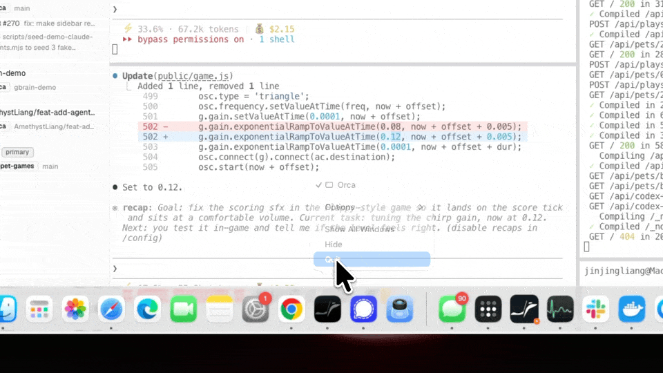
Quick Open · Jump Palette
| 단축키 | 기능 |
|---|---|
| Cmd-P | Quick Open — 현재 worktree 내 파일 검색. 최근성+매치 점수로 랭킹, gitignore 파일은 후순위. |
| Cmd-J | Worktree Jump Palette — 모든 worktree·탭·프로젝트·repo 그룹 검색. repo/worktree 문법 사용. |
| Shift-Enter | 선택 worktree를 새 split으로 열기 |
Jump Palette는 최근 worktree, 프로젝트, repo별 worktree, 열린 탭(현재 worktree 우선 → 전역)을 보여줍니다. 모든 바인딩은 Settings → Shortcuts 에서 리매핑 가능.
지원 에이전트 & 권한
- Orca는 터미널 프로세스 런처를 통해 어떤 CLI 에이전트든 실행합니다. 사전 구성된 피커에 40개 이상의 에이전트가 있으며, 통합 깊이는 두 등급입니다.
- Deep integration(사용량 추적·hot-swap·hooks 지원) vs Auto-setup(기본 실행 구성만).
- 일회용 worktree에서 매번 확인 없이 실험하도록 권한 우회 플래그가 미리 채워집니다.
Yolo(자동 승인) ↔ Manual(수동 승인)을 전역 또는 에이전트별로 전환. Settings → Agents → Agent Permissions. worktree를 샌드박스로 취급하므로 Yolo가 기본이지만, 위험 작업엔 Manual 고려.
- Claude
--dangerously-skip-permissions- Codex
--dangerously-bypass-approvals-and-sandbox- Gemini · Cursor · Crush · Kimi 등
--yolo
Claude Code · Codex 통합
▸ Claude Code
- Anthropic의 agentic CLI가 first-class로 통합 — 계정 인식 세션 관리, 사용량 추적, 원클릭 계정 전환.
- worktree 디렉토리를 작업 컨텍스트로 실행하며, 상태 바에 현재 사용량·rate-limit 근접도를 표시.
- repo별 hooks/memory 사용. Orca가
~/.claude설정을 자동 감지.
# 설치 후 아무 터미널에서 로그인 → Orca가 ~/.claude 자동 감지
npm i -g @anthropic-ai/claude-code▸ Codex
- OpenAI의 agentic CLI. 사용량·hot-swap·재시작 전반에서 계정 정체성을 유지.
- Orca가 로컬 Codex 사용량을 모니터링해 활성 계정 기준으로 상태 바에 표시. 자격증명은
~/.codex에서 읽음. - Windows(WSL) 지원 — 호스트 또는 WSL 배포판에서 실행, 계정 홈 격리.
- restart chip은 동일 계정으로 재실행하므로, 새 계정 재시작 전엔 먼저 계정 전환.
커스텀 CLI 에이전트 추가
- Orca는 모든 CLI 도구를 first-class로 취급 — 커스텀 커맨드라인 도구를 인터페이스에 직접 통합합니다.
- 등록: Settings → Agents → “Add custom agent” → 이름 · 바이너리 경로/커맨드 · 기본 인자(선택) · startup hook(선택) 입력.
- 등록한 에이전트는 모든 worktree의 터미널 콤보박스에 나타나고, 항상 현재 worktree 디렉토리에서 동작.
- CLI가 OSC 타이틀(
working/idle)을 emit하면 상태 점이 표시됩니다. 종료 시 Restart chip 제공.
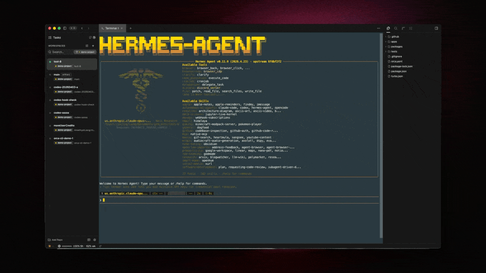
계정 핫스왑 (Codex · Claude)
- 여러 계정 사이를 재인증·설정편집 없이 즉시 전환. 다중 계정으로 토큰 사용량을 극대화하려는 개발자용.
- 각 계정을 터미널에서 최소 1회 로그인하면 인증이
~/.codex(Claude는~/.claude)에 저장되고, Orca가 사용량·한도와 함께 감지된 계정을 모두 표시. - “personal”·“work” 같은 라벨을 붙일 수 있고, 스왑은 자격증명 포인터만 재작성(재인증 아님).
- 새 세션은 선택 계정을 쓰지만, 이미 실행 중인 세션은 재시작 전까지 원래 계정 유지.
설정: Settings → Agents → Codex Accounts · 스왑: 상태 바의 Codex chip → account switcher.
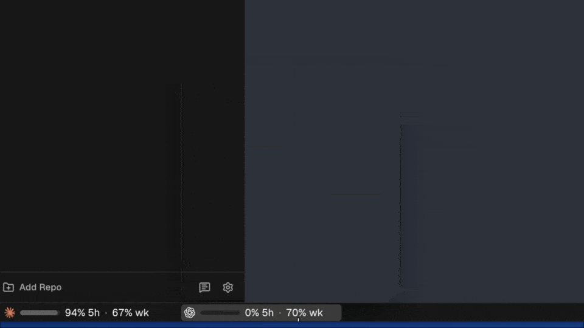
세션 히스토리 · 하이버네이션
▸ Agent Session History
- Orca가 지원 에이전트의 온디스크 트랜스크립트를 자동으로 읽어 과거 세션을 조회·재개(resume). (Claude·Codex·Cursor·Gemini 등)
- 제목·작업 디렉토리·브랜치·모델·대화 미리보기로 필터링. 스코프 토글: Workspace / Project / All machines.
- 패널 열기: 오른쪽 사이드바 → Agents 탭. resume 클릭 시 원래 디렉토리·session ID로 새 터미널에서 재개.
- resume은 로컬 workspace 필요(원격 workspace 불가).
claude --resume <id> codex resume <id>
cursor-agent --resume <id>▸ Agent Hibernation (Experimental)
- 유휴 상태의 백그라운드 에이전트 터미널을 일시정지했다가, worktree를 다시 열면 자동 재개해 메모리를 아낍니다.
- 조건(모두 충족): 에이전트 “done” 상태 · 포그라운드 아님 · 종료 후 키 입력 없음 · resume 지원 에이전트 · 설정된 유휴시간 경과 · 모바일 세션 미구동.
- 유휴시간(idle window): 1분~24시간, 기본 30분. 키 입력·새 출력·탭 복귀 시 타이머 리셋.
- 활성화: Settings → Experimental → Agent hibernation. 재개는 히스토리와 동일한 resume 플래그 사용(대화·디렉토리 보존).
사용량 & Rate-limit 추적
- 여러 에이전트(Claude·Codex·Gemini·OpenCode·Kimi·MiniMax)의 로컬 사용량을 상태 바에 표시해 rate-limit 정체를 예방.
- API 호출이 아니라 디스크의 로컬 상태를 읽는 방식 — 에이전트가 자체 기록을 남길 때만 갱신됩니다.
- 활성 계정 플랜 대비 현재 사용량, 각 윈도우(5시간·일간·주간)의 리셋 시각 표시. 80% 임계값에서 경고 표시.
- 상태 바는 활성 계정을 반영하고, 나머지 계정은 account switcher에서 별도로 확인.
Agent Hooks & Memory
- Repo별 hooks: Orca가
.claude/·.codex/설정을 읽어 worktree에서 에이전트 실행 시 기존 hook을 실행. - Worktree 셋업 hooks: 생성 직후 자동 실행 명령(예:
pnpm install,direnv allow)을 Settings → Repository → Hooks 에서 구성. - Memory 파일: Claude의
CLAUDE.md, Codex의AGENTS.md는 에이전트 소유로 유지되며 파일 탐색기에서 인라인 편집. - hook 엔드포인트가 디스크에 기록되어(
{userData}/agent-hooks/endpoint.env) 앱 재시작 후에도 live 연결 유지.
Diff 뷰어
AI가 만든 변경을 진지하게 리뷰하는 핵심 화면. staged/unstaged/untracked를 합친 combined diff를 보여주고, git add -p처럼 hunk·line 단위 시각적 스테이징이 됩니다.
- 이미지 diff: side-by-side · swipe · onion-skin 모드. Merge conflict: 3-way 뷰로 해결.
- start-from ref 기준으로 scope를 잡아 commit/branch/base ref와 비교. 긴 라인용 word wrap 토글.
| 키 | 기능 |
|---|---|
| j / k | 다음/이전 변경 파일 |
| n / p | 다음/이전 hunk |
| s | 커서 위치 hunk 스테이징 |
| c | 코멘트 시작 (AI Diff 주석) |
| F7 / Shift+F7 | 에디터 내 다음/이전 변경 |
AI Diff 주석 (Annotate)
- 에이전트가 만든 변경의 diff 라인 위에 인라인 코멘트를 남기고, 여러 코멘트를 batch로 묶어 한 번에 에이전트에게 되돌려 수정 요청합니다(조각조각 X, 한 라운드로).
- 라인에 마우스를 올리면 gutter에 “+” → 클릭 또는 c 로 코멘트 시작. markdown 지원, Cmd-Enter 저장 · Esc 취소.
- “Send to agent”로 전송. 미해결 코멘트는 다음 batch에 재포함. 코멘트는 수정 후에도 검증용으로 핀 고정되며 “Resolve”로 접습니다.
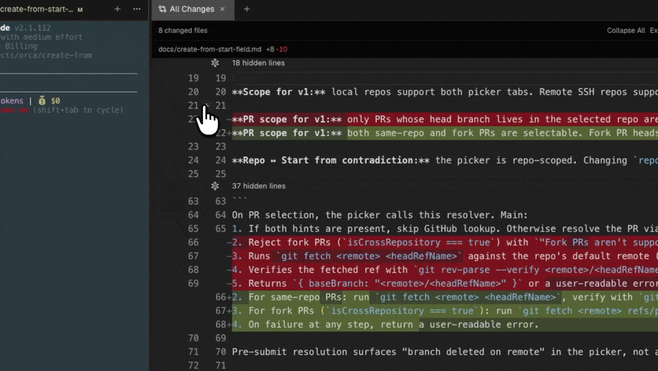
Attribution (AI/사람 라인 추적)
- 에이전트가 수정한 라인을 추적(provenance)해 AI 작성 라인을 gutter에 은은한 마커로 표시.
- 사람이 AI 코드 위에 편집하면 attribution이 다시 human으로 뒤집힙니다(flipping).
- Attribution은 Orca 내부에만 존재하며 git에 커밋되지 않음(단, diff 메타데이터는 툴바에서 export 가능).
- 추가 리뷰가 필요한 영역 식별 · 보안/컴플라이언스 감사 시 AI/사람 코드 분리 · 본인 작성분은 다시 안 읽어 리뷰 가속.
커밋 & 푸시
- diff 뷰어 옆 Commit Panel에서 스테이징 → 메시지 작성 → 커밋까지 Orca를 벗어나지 않습니다. Cmd-Enter 로 커밋.
- “Generate with AI”가 staged 변경으로 커밋 메시지 초안 생성, “Fix with AI”가 실패한 pre-commit hook 수리.
- push는 브랜치가 뒤처졌을 때 silent force-push를 방지. Force Push with Lease는
--force-with-lease를 명시적으로 써서 commit 수·upstream을 보여줍니다. - push 후 base 브랜치·제목·설명·draft 여부를 정해 PR/MR 생성. Action Recipes로 repo별 AI 액션 템플릿 커스터마이즈.
이미 push된 커밋을 Amend 하려면 확인 절차가 있습니다. --force-with-lease 덕에 타인 작업을 덮어쓰는 사고를 예방합니다.
GitHub · 이슈 · Actions
- worktree를 PR/MR에 연결하고 인라인 리뷰 상태를 표면화. Provider: GitHub(가장 깊은 통합) · GitLab · Bitbucket · Azure DevOps · Gitea.
- 실패한 GitHub Actions 체크는 빨간 표시 + job 로그 인라인 확인. “Fix broken checks”로 실패 체크명을 에이전트에게 전달.
- GitHub/GitLab 이슈를 Orca 내에서 조회·편집. 이슈로 worktree 생성 시 task 이름 자동 채움.
- 조건 통과 시 auto-merge 가능(repo의 merge method 준수). GitHub Projects 전체 뷰는 사이드바 Tasks에서.
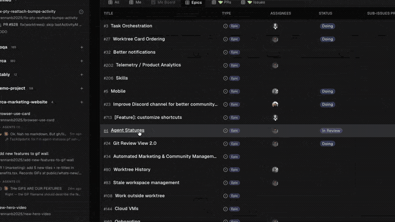
Linear·Jira 이슈도 task drawer에서 GitHub 이슈와 나란히 조회·생성·연결됩니다. Linear 이슈로 에이전트 실행 시 설명의 인라인 이미지·미디어까지 컨텍스트로 전달. 설정: Settings → Integrations.
에디팅 — 에디터 · 마크다운 · 뷰어
▸ Monaco 에디터 & 자동저장
- VS Code의 Monaco에 Orca 커스터마이즈를 더한 에디터. 파일은 blur 시점·짧은 idle 후 자동 저장(정상 흐름엔 dirty 점 없음).
- Changes view: 커서를 벗어나지 않고 HEAD-vs-working-tree diff를 인라인 확인(diff 뷰어와 동일 단축키 n/p/s).
- Cmd-D 다음 동일 항목 · Cmd-F / Cmd-Shift-F 파일/worktree 검색 · Cmd-Click 정의로 이동.
▸ Rich Markdown 에디터
- 빈 줄에서 / → slash 메뉴(heading·list·code·callout·image·mermaid·toggle 삽입).
[[로 wiki 스타일 내부 링크(경로 자동완성). - Cmd-Shift-M 로 rich ↔ raw Monaco 토글. 검색은 렌더된 텍스트 기준. 렌더 텍스트에 직접 리뷰 코멘트 가능. front matter는 기본 숨김(“More actions”로 토글).
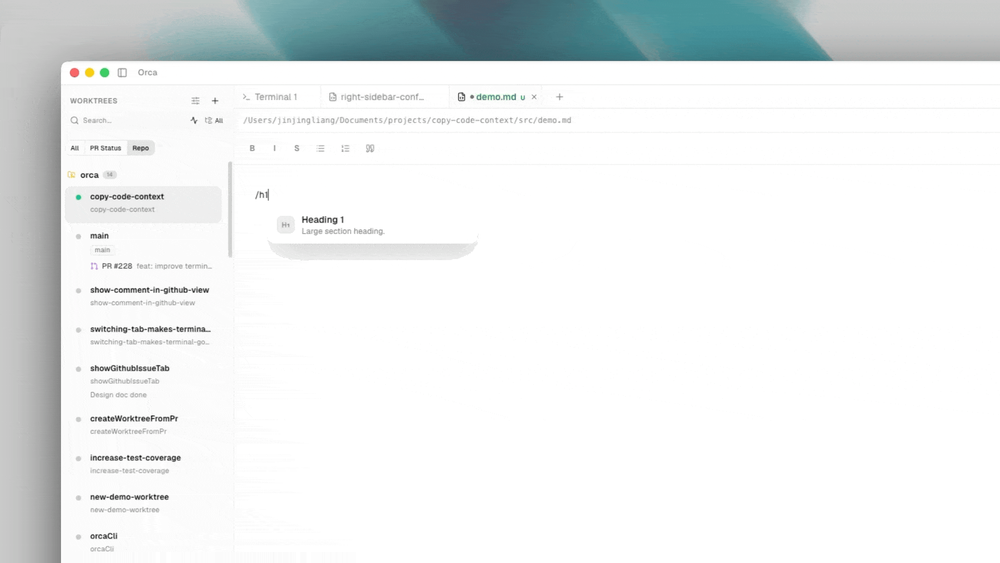
▸ 뷰어 & 파일 탐색기
- 내장 뷰어: Mermaid(인라인 렌더 +
.mmdpan/zoom) · PDF(스크롤·줌·텍스트 선택) · 이미지(png/jpg/svg/webp/gif, image-diff) · CSV/TSV(정렬·검색 테이블) · Jupyter(.ipynb베타). - 파일 탐색기는 on-disk를 실시간 감시(에이전트 변경도 즉시 반영). OS에서 드롭 → 복사, 이미지 → 마크다운 삽입, 터미널로 드롭 → 프롬프트에 경로 붙여넣기.
- git 상태별 색 구분(untracked/modified/staged/ignored). Cmd-Shift-F 로 선택 폴더 scope 검색.
브라우저 & 디자인 모드
- worktree마다 자체 브라우저: 주소창·히스토리·devtools를 갖춘 실제 Chromium 창이 페인에 임베드. 탭은 worktree 단위로 격리됩니다.
- Chrome/Edge에서 쿠키를 import해 로그인 세션 유지. CDP 디바이스 에뮬레이션으로 커스텀 viewport 반응형 테스트.
- Orca CLI와 연동되어 에이전트 기반 브라우저 자동화(
orca goto/click/fill) 지원.
| 키 | 기능 |
|---|---|
| Cmd-T | 새 탭 (worktree 범위) |
| Cmd-Shift-T | 마지막 닫은 탭 다시 열기 |
| Cmd-F | 페이지 내 찾기 |
툴바에서 Design Mode를 켜면 커서가 picker로 바뀝니다. 요소를 클릭하면 HTML(주변 구조) · computed CSS · 요소 스크린샷 · 소스 파일/라인이 한 첨부로 활성 에이전트 터미널에 전달됩니다. “이 padding을 위 카드에 맞춰 넓혀줘” 식으로 바로 요청 → 에이전트가 소스 수정 → hot-reload → 다시 클릭해 확인. 반복.
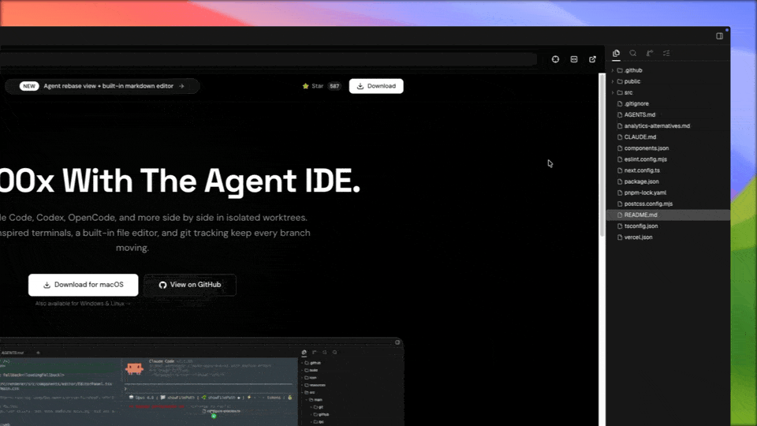
- Browser-use profiles: 특정 정체성(로그인 사용자·쿠키 세트·user-agent)으로 브라우저 실행. 각 프로필은 쿠키·스토리지·캐시를 독립 파티션에 저장. Settings → Browser → Profiles.

터미널
- VS Code와 동일한 xterm.js 기반에 AI-에이전트 워크플로 강화. split 레이아웃 안의 탭으로 여러 셸을 나란히.
- 색상 테마 커스터마이즈(Ghostty·Warp 테마 import). Windows는 PowerShell/CMD/WSL 선택.
- Floating Terminal: 현재 worktree와 무관하게 단축키로 뜨는 전역 셸. Quick Commands: 자주 쓰는 명령·프롬프트 저장. 우클릭 Copy Context로 범위 지정 transcript 복사.
| 키 | 기능 |
|---|---|
| Cmd-T | 새 터미널 탭 |
| Cmd-Alt-T | 새 에이전트 탭 |
| Cmd-\ / Cmd-Shift-\ | 우측 / 하단 분할 |
| Cmd+Option+A (Linux/Win Ctrl+Alt+A) | floating terminal 토글 |
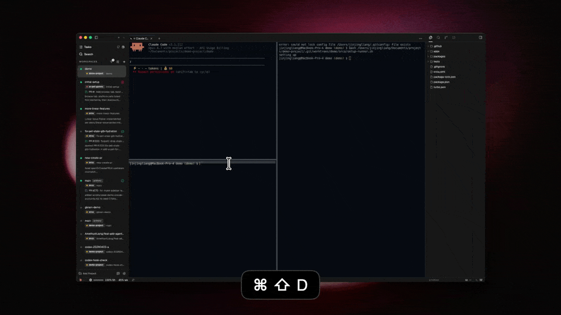
SSH · 원격 Orca 서버
▸ SSH Worktrees
- 에이전트는 SSH로 원격 머신에서 실행되고, editor·diff·browser는 로컬에 유지. git worktree는 원격에 생성되고 파일 이벤트가 동기화됩니다.
- 연결이 끊겨도 실행 중 에이전트는 종료되지 않고 Orca가 자동 재연결·재부착(원격 relay로 앱을 닫아도 PTY 유지).
- listening 포트 자동 감지 + 수동 설정 · 로컬 remapping. Cmd+Shift+I 로 Ports 탭 토글.
- 설정: Settings → SSH 에서 host·user·port·(선택)identity file → Test. 고급(proxy·jump host·multiplexing)은 Advanced Connection.
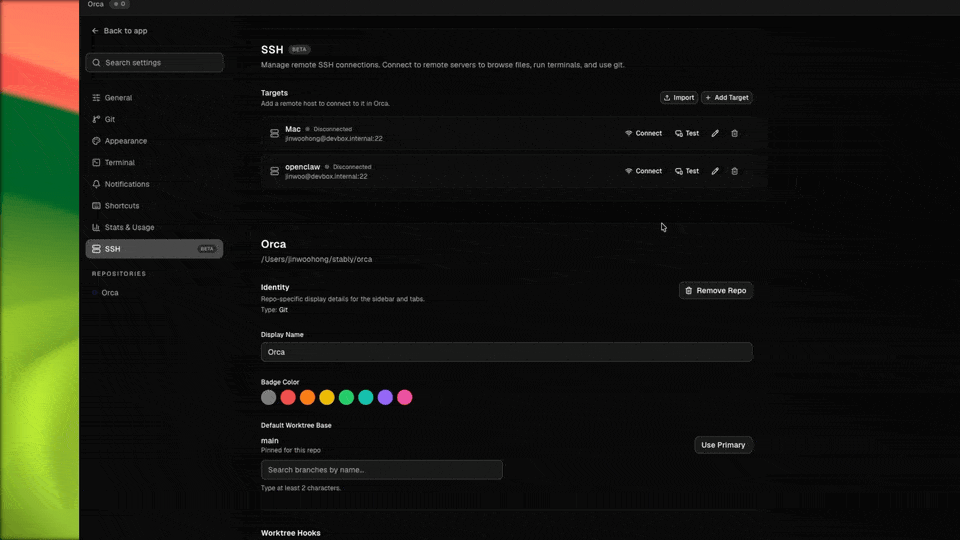
▸ Remote Orca Servers
- 2-role 구조: 서버 머신이
orca serve로 repos·worktrees·terminals를 소유, 클라이언트는 UI만 실행해 원격 연결. - 연결은 LAN·Tailscale·SSH forwarding·tunnel로(공개 인터넷 노출 아님). 모바일용 pairing 모드 지원.
- SSH worktree와 차이: Remote Server는 원격 머신이 자체 런타임 호스팅, SSH worktree는 로컬 머신이 런타임 소유.
orca serve --pairing-address devbox.tailnet-name.ts.net
orca environment add --name server-b --pairing-code '<orca://pair?...>'
orca worktree create --environment server-b --repo id:<repo-id> \
--name task-123 --agent codex --prompt "Implement this change"Orca CLI
터미널에서 Orca 에디터를 스크립트로 제어: worktree 관리, 에이전트 터미널 제어, 파일/브라우저 자동화, 스킬 설치. 거의 모든 명령이 --json 을 지원해 파싱하기 좋습니다.
Selector 개념이 핵심 — 리소스를 active · id: · path: · branch · issue 로 참조합니다.
# 설치 확인 & 런타임 상태
command -v orca
orca status --json
# worktree 만들고 이슈 연결 + 에이전트 기동
orca worktree create --repo id:<repoId> --name my-task \
--issue 123 --agent codex --prompt "..." --json
# 에이전트 터미널과 대화 → 완료까지 대기
orca terminal send --text "continue" --enter --json
orca terminal wait --for tui-idle --timeout-ms 30000 --json
# 상태 체크포인트(코멘트) 남기기 — 첫 줄은 '방금 무슨 일'
orca worktree set --worktree active \
--comment "reproduced auth failure; testing fix" --json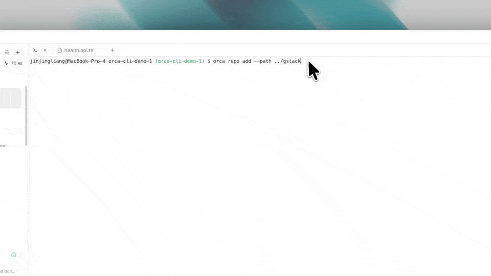
멀티 에이전트 오케스트레이션
여러 에이전트가 공유 inbox · 태스크 레코드 · dispatch · 완료 메시지 · decision gate로 협업하게 조율하는 계층입니다.
- Message
- 터미널 간 영속 메모. type: status·dispatch·worker_done·escalation·decision_gate·heartbeat.
- Task
- spec·의존성·상태(pending/ready/dispatched/completed/failed/blocked)를 가진 작업 단위.
- Dispatch
- 태스크를 특정 터미널에 할당. 실패 시 새 컨텍스트로 재시도.
- Decision Gate
- 코디네이터가 소유한 질문. 해결될 때까지 태스크 블로킹.
# 그룹 셀렉터(@all/@idle/@codex)로 메시지 브로드캐스트
orca orchestration send --to @idle --subject "Anyone free?" --json
# 태스크 생성 → 워커에 dispatch
orca orchestration task-create --task-title "Billing audit" --spec "..." --json
orca orchestration dispatch --task <taskId> --to <worker> --inject --json
# 코디네이터가 자동 분배하며 실행
orca orchestration run --spec "Split the QA work..." --max-concurrent 3 --json예약 자동화 (Automations)
- 프롬프트를 스케줄에 맞춰 실행해 triage·review·유지보수 같은 반복 작업을 worktree를 열지 않고 처리.
- 스케줄: 프리셋(hourly·daily·weekdays·weekly) + cron/RRULE 표현식. 대상은 repo 또는 기존 worktree(
--workspace active). - 안전한 흐름:
--disabled로 먼저 만들고 →edit --enabled로 활성화 →run으로 예약 전 수동 실행.
orca automations create \
--name "Weekday triage" --trigger weekdays --time 09:00 \
--prompt "Triage new issues and summarize blockers" \
--provider codex --repo my-repo --disabled --jsonComputer Use (데스크톱 앱 제어)
- 접근성 트리 · 스크린샷 · UI 액션으로 네이티브 데스크톱 앱을 에이전트가 제어. “snapshot → act → snapshot” 루프.
- 최초 사용 시
permissions·capabilities점검. 지원 액션: click·set-value·type-text·press-key·hotkey·scroll. - 비밀번호 등 민감 입력은
--value-stdin으로 stdin 전달해 로그 노출 방지.
orca computer list-apps --json
orca computer get-app-state --app com.spotify.client --json
orca computer click --app <app> --element-index <i> --json
# 민감 입력은 stdin으로
printf '%s' "$TEXT" | orca computer set-value --app com.apple.Safari \
--element-index 7 --value-stdin --jsonSkills Registry & MCP
- Orca Skills: 에이전트가 자기 skill 디렉토리에 설치해 CLI 능력을 확장하는 버전 관리 패키지.
skills/<name>/SKILL.md를 가진 repo면 커스텀 설치 가능. - MCP 서버: Model Context Protocol 엔드포인트로 외부 도구를 호환 에이전트에 노출. 등록: Settings → Integrations → MCP.
npx skills add https://github.com/stablyai/orca --skill orca-cli
npx skills add https://github.com/stablyai/orca --skill orchestration
npx skills add https://github.com/stablyai/orca --skill computer-use모바일 · 알림 · 피드
▸ Mobile Companion (Beta)
- 데스크톱 Orca와 페어링해 에이전트를 원격 모니터·제어하는 iOS/Android 앱. 로컬·원격 호스트의 모든 worktree를 상태(working/done/waiting)와 함께 조회.
- 터미널 스크롤백·특수키·Live 스트리밍, 에이전트 응답(continue/yes/자유입력), 사진·파일 첨부, 마이크 받아쓰기, 소스 컨트롤(리뷰·stage·commit)까지 폰에서.
- 페어링: 데스크톱 상태 메뉴에서 일회용 코드 생성 → 모바일 “Pair”에 붙여넣기. 데스크톱이 항상 source of truth(닫으면 연결 해제).
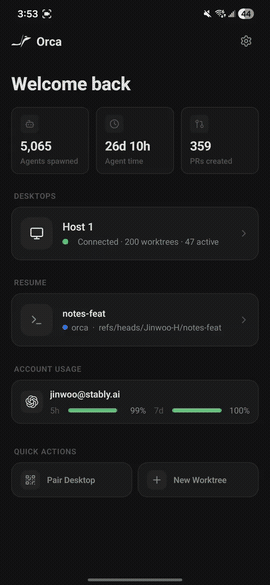
▸ Notifications & Agents Feed
- 에이전트가 working→idle로 바뀌면 “agent-finished” 알림(시스템 알림·사운드·worktree 칩). 헤더 벨이 전체 미읽음을 모아 보여주고 클릭 시 해당 worktree로 점프. macOS Dock 배지 미러링.
- 카테고리(system/sound/chip-only) 토글·커스텀 사운드는 Settings → Notifications. 지원 포맷: MP3·WAV·OGG·M4A·AAC·FLAC.
- Agents Feed: 모든 worktree의 에이전트 활동(완료·블로킹·응답 프리뷰·worktree 생성)을 시간순 스레드로 모아 한 곳에서 triage. 실행 중은 상단 고정, 미읽음 배지 표시. (기본 활성)
실전 워크플로우 5선
▸ ① 같은 작업에 에이전트 3개 경쟁시키기
- 같은 시작 ref에서 worktree 3개(
fix-bug,fix-bug-2,fix-bug-3)를 만들고 각각 다른 에이전트(Claude·Codex·Cursor)를 띄웁니다. - 동일한 프롬프트를 세 곳에 붙여넣고, 탭을 가장자리로 드래그해 나란히 비교. 에이전트 간 불일치는 신호, 일치하면 신뢰도↑.
- 승자 diff는 Annotate로 리뷰 후 commit·push·PR, 패자 worktree는 원클릭 삭제.
▸ ② AI diff 라인 단위 리뷰
- diff 뷰에서 j/k 로 파일 이동, c 로 코멘트. 코멘트는 하나의 프롬프트로 묶여 “Send to agent”로 batch 전송.
- 상태 점(노랑=대기·초록=작업 중) 확인 → 수정 후 diff 재오픈 → 해결 처리·후속 코멘트 → 만족 시 commit.
▸ ③ 10개 worktree 넘나들기
- Cmd-J 로 jump palette → 작업 이름 일부 입력 → Enter 이동 / Shift-Enter 분할 뷰.
- State Dots로 상태 파악, 종료된 에이전트는 Restart Chip으로 재실행. palette 성능 위해 머지된 worktree는 공격적으로 삭제(worktree+branch 함께).
▸ ④ Design Mode로 UI 버그 수정
- 브라우저 페인에서 버그 페이지 열고 Design Mode ON → 깨진 요소 클릭(HTML·CSS·이미지가 에이전트 채팅에 첨부).
- 수정 설명(예: “this padding is too tight, increase to match the cards above”) → 에이전트가 소스 수정 → hot reload → 다시 클릭 확인 → 반복 후 commit.
▸ ⑤ SSH로 원격 머신에서 작업
- Settings → SSH 에서 호스트 추가·테스트 → SSH 대상으로 repo 추가 → worktree 생성 시 원격에서
git worktree add실행 → 원격에서 에이전트 기동. - 랩톱 연결이 끊겨도 원격 에이전트는 계속 실행되고 재연결 시 자동 재부착. diff 리뷰·commit·push는 랩톱에서.
설정 & 트러블슈팅
모든 설정은 Cmd-, 로 열고 검색합니다.
- General / Appearance
- CLI 등록, 업데이트, UI zoom, worktree 이름 기본값 · 테마·강조색·밀도, UI/에디터 폰트, minimap, 앱 아이콘, 언어.
- Git / Terminal
- base ref resolver, commit signing, 외부 git 도구 · 폰트·테마·커서, Ghostty/Warp import, shell.
- Agents / Browser
- 에이전트 감지·권한(Yolo/Manual)·계정·startup hooks · 프로필, 기본 zoom, Design Mode, devtools.
- Integrations
- GitHub OAuth, Linear API 토큰, Jira, MiniMax 쿠키, MCP 서버.
- 기타
- Notifications · Voice(OpenAI key) · SSH · Remote Servers · Shortcuts(전체 리매핑) · Repository(base ref·auto-run·아이콘) · Experimental(Activity·compact cards·hibernation).
에이전트 시작 실패 → Settings → Agents에서 CLI PATH 확인 + 탭 Restart chip.
Diff 렌더 멈춤 → diff 툴바 새로고침 아이콘(worktree 재읽기).
Worktree 생성 실패 → 미fetch ref/중복 branch 원인. repo 터미널에서 git fetch origin.
CLI command not found → Settings → Experimental → CLI에서 등록.
성능 저하 → 안 쓰는 worktree/탭 닫기. 로그는 Help → Open Logs.
치트시트
▸ 단축키 (macOS 기준)
| 단축키 | 기능 | 영역 |
|---|---|---|
| ⌘K | 문서 검색 | 전역 |
| Cmd-P | Quick Open(파일 검색) | worktree |
| Cmd-J | Worktree Jump Palette | 전역 |
| Shift-Enter | worktree를 새 split으로 열기 | Jump |
| Cmd-, | 설정 열기 | 전역 |
| Cmd-Q | 종료(에이전트는 백그라운드 유지) | 전역 |
| Cmd-T / Cmd-Alt-T | 새 터미널 탭 / 새 에이전트 탭 | 터미널 |
| Cmd-\ / Cmd-Shift-\ | 터미널 우측 / 하단 분할 | 터미널 |
| Cmd+Option+A | Floating terminal 토글 | 터미널 |
| Cmd+Option+W | 에디터 파일 탭 전부 닫기 | 에디터 |
| j / k | 다음/이전 변경 파일 | Diff |
| n / p | 다음/이전 hunk | Diff |
| s / c | hunk 스테이징 / 코멘트 시작 | Diff |
| Cmd-Enter | 코멘트 저장 · 커밋 | Diff/Commit |
| Cmd-Shift-M | rich ↔ raw 마크다운 토글 | 에디터 |
| Cmd-Shift-F | worktree/폴더 검색 | 에디터 |
| Cmd-T / Cmd-Shift-T | 브라우저 새 탭 / 닫은 탭 복원 | 브라우저 |
| Cmd+Shift+I | Ports 탭 토글 | SSH |
Windows/Linux는 대체로 Cmd→Ctrl, Option→Alt. 모든 바인딩은 Settings → Shortcuts에서 리매핑 가능.
▸ CLI 자주 쓰는 명령
| 명령 | 기능 |
|---|---|
orca status --json | 런타임 연결 상태 |
orca worktree create … | worktree 생성(+--agent --prompt --issue) |
orca worktree set --comment … | 상태 체크포인트 코멘트 |
orca terminal send / read / wait | 에이전트 터미널 제어(--for tui-idle) |
orca goto / click / fill | 브라우저 자동화 |
orca orchestration run / dispatch | 멀티 에이전트 오케스트레이션 |
orca automations create --disabled | 예약 자동화 생성 |
orca computer get-app-state / click | 데스크톱 앱 제어 |
orca serve --pairing-address … | 원격 Orca 서버 구동 |